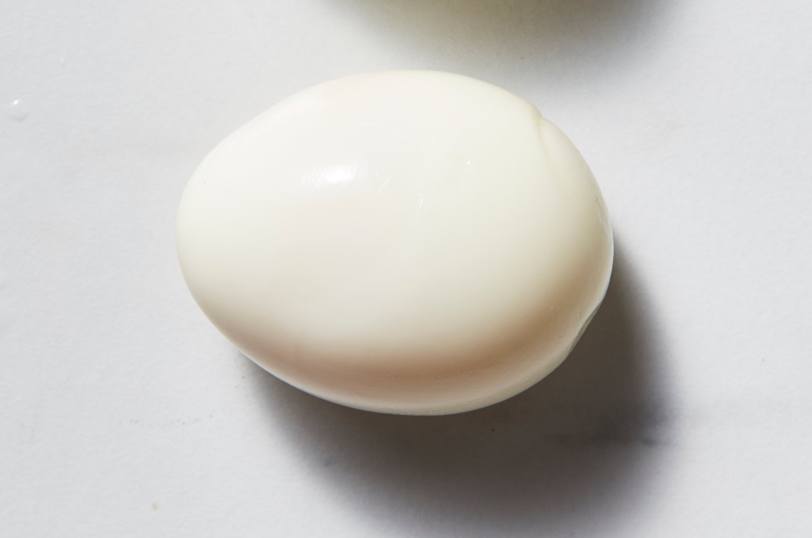

Boiled egg

A boiled egg that was boiled for ten minutes
Ingredients
Procedure
- First, boil the eggs. Place them in a pot and cover them with cold water by 1 inch.
Bring the water to a boil over high heat.
- Then, let them sit in the hot water. As soon as the water begins to boil, turn off the heat and cover the pot.
Leave the eggs in the hot water for anywhere from 10-12 minutes, depending on how you like your eggs.
The 10-minute eggs will have vibrant, creamy yolks, while the 12-minute yolks will be paler and opaque, with a chalkier texture.
- Finally, move them to an ice bath. When the time is up, drain the eggs and transfer them to a large bowl of ice water to stop the cooking process.
Leave them in the ice bath for at least 14 minutes before you peel the eggs.
If you're not planning to eat the eggs right away, feel free to leave them in the shells and store them in the fridge.
But even if this is the case, don't cut the ice bath short!
It's crucial for stopping the cooking process and making the eggs easy to peel later on.
Boiled Egg recipe